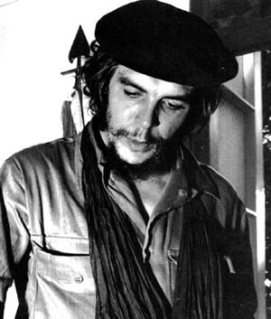

Ernesto Che Guevara (1928-1967)
Revolucionario argentino. Su romántico radicalismo revolucionario y su cruel muerte convirtieron al "Che" en el héroe revolucionario de muchos jóvenes del mundo. Conocido como Che Guevara, nació en Rosario, Argentina, en el seno de una familia acomodada que se traslada a Buenos Aires. Se matricula en la Facultad de Medicina, donde participa en diversas manifestaciones contra la política de Perón. En 1950 interrumpe sus estudios universitarios y se marcha a recorrer América Latina en motocicleta. Durante este viaje se convence de que era necesaria una revolución violenta. Cuando termina sus estudios decide abandonar el país. Marcha a Bolivia, Perú, Ecuador, Panamá y Costa Rica, destacándose siempre entre los grupos extremistas. Después pasó a Guatemala, lugar donde se encuentra cuando el Gobierno revolucionario de Arbenz fue derrotado por una invasión respaldada por la CIA. En 1954 se encuentra en México; allí entra en contacto con los hermanos Castro, Raúl y Fidel, que acababan de ser amnistiados por Batista, empezando así lo que sería una intensa relación. Che Guevara decide acompañarles en la invasión y campaña de Sierra Maestra y Fidel le nombra su lugarteniente.
Con el triunfo de la revolución, y tras un largo viaje por Asia y áfrica, pasa a ocupar importantes cargos en el nuevo régimen instaurado por Fidel Castro, entre ellos los de director del Instituto Nacional de Reforma Agraria, Ministro de Economía y director del Banco Nacional de Cuba y Ministro de Industria. Desde todos estos puestos propugnó una política marxista y antiimperialista contra Estados Unidos. En 1965 desaparece de la vida política oficial para incorporarse a la guerrilla en países donde se desarrollaban luchas revolucionarias. En Bolivia interviene en varios combates. En 1967 es herido durante un combate con las fuerzas gubernamentales bolivianas y al día siguiente es asesinado por sus captores.